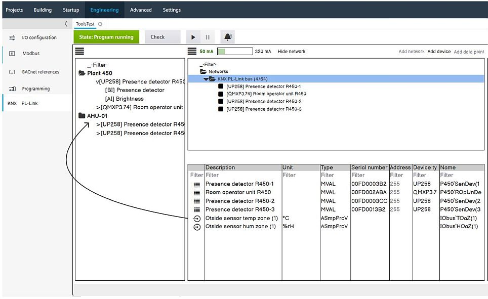

处理共享对象
KNX PL-Link 中的共享对象同时向多个设备传输数据。
- Shared objects do not belong to any device, they are owned by the KNX PL-Link bus (KNX PL-Link network object).
- The creation of shared objects is driven by the configuration of devices. If a device is configured to use shared objects, the shared objects are automatically created. If the shared objects are not needed by any device anymore, they are deleted.
- Shared objects are not saved in the library with the device or the device chart.

创建后，选择网络时，共享对象将在表中可见。表中不支持的属性为空且无法编辑（在线模式下的行为相同）。共享对象始终位于表格底部最后一个设备下方。
命名最初是使用 I/O 总线作为命名父级创建的。如果您想更改名称，请将名称拖放到植物上。然后根据植物和文件夹结构计算命名。
- Shared objects can be removed from a plant via context menu Remove from plant. Then the naming parent is again moved to the I/O bus.
- If a plant containing shared objects is deleted, the naming parent is reset to the I/O bus.